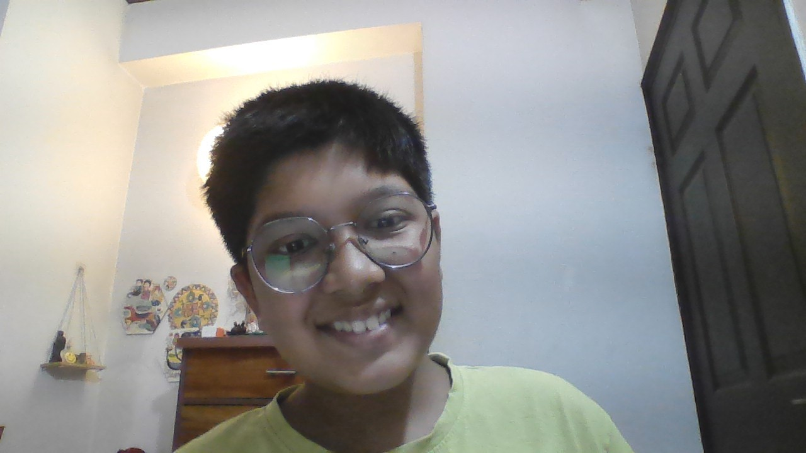

I'm in 7th grade and I like building little websites and games, drawing, and figuring out how things work. This page is where I keep track of school projects, things I'm learning, and stuff I'm into.

7th grader · Uttar Pradesh, India
I started learning to code last year because I wanted to make a game for my little cousin. Now I'm slowly learning HTML, a bit of Python, and how to use Scratch for animations. I'm definitely still learning, so this page will keep changing as I make new stuff.
Joined my school's coding club and made my first animation in Scratch.
Made my first webpage for a school science project and got really into drawing layouts on paper first.
Started learning Python this year and made this page to keep track of everything I'm working on.